Not by stopping. By steering.
For the city that never stops.
One live picture of Mumbai's roads, rain, tide and crowds for Mumbai Traffic Police, the BMC and its 1916 disaster control, ambulance (108) crews and BEST. On-premises open-source AI proposes; a named officer decides.
Sajag (सजग): Hindi and Marathi for “alert, watchful”.
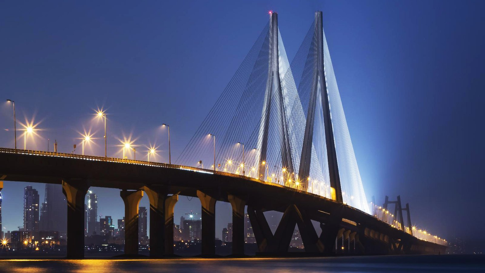
Labels used throughout: LIVE (a real open feed), OBSERVED (a measured record), MODELLED (computed under stated assumptions), SIMULATED (an exercise scenario), EMULATED (a stand-in for a feed that needs an agency's access), Reference photo · not live.
| What | Fact | Source |
|---|---|---|
| Rain at high tide | Waterlogging is unavoidable when a heavy burst coincides with a high tide of about 4.5 m: the sea outfalls close and the water has nowhere to go | BMC chief engineer via Free Press Journal (2025); India TV explainer (27 May 2025) |
| Known flooding spots | Hundreds, by year: 386 chronic flooding spots in one count; 453 → 498 waterlogging spots in a later one. Hindmata, Dadar TT, King's Circle, Sion, Kurla, Parel, Andheri and Milan subways recur | BMC counts via Free Press Journal |
| 26 May 2025 | Earliest monsoon onset in decades; Colaba 135.4 mm in 24 h to 08:30; ~90 mm in 90 minutes flooded the new Acharya Atre Chowk Metro Line 3 station; Hindmata and Dadar TT flooded | IMD; Free Press Journal; DT Next; Deccan Herald |
| 18–19 Aug 2025 | Red alert; Vikhroli ~223–230 mm and Santacruz ~207–238 mm in 24 h; the Mithi at ~3.9 m against a 4 m danger mark; 350–500 people evacuated near Kurla; tracks under water at Sion and Kurla; Andheri Subway closed | IMD (windows differ); The Statesman; Hindustan Times; Mongabay |
| Pumps | BMC runs 6 major and 10 mini storm-water pumping stations (Haji Ali, Irla, Love Grove, Cleveland Bunder, Britannia, Gazdarbandh among the major ones); in 2025 only 4 of 6 pumps at King's Circle worked | Free Press Journal (2025) |
| Suburban rail | ~68 lakh riders a day on average in 2025-26 (Central ~38.7 lakh, Western ~29.5 lakh); when tracks flood they pour onto roads and station forecourts | Railway data via Free Press Journal |
| Traffic | ~126 h lost to peak-hour traffic in 2025; rush-hour speeds ~17–21 km/h; 18th most congested city in the world; worst day 16 Sep 2025 | TomTom Traffic Index 2025 |
| Crowds | Anant Chaturdashi visarjan, Lalbaug → Girgaon Chowpatty: restrictions on 53 roads (2024); also Wankhede egress, the Mumbai Marathon, New Year on Marine Drive | The Statesman (2024); Lokmat Times (green corridor, 2024) |
| Ambulance (108) | Context only: ~18.75 min to the patient in older Mumbai figures; 20–45 min at peak in Andheri, Kurla and South Mumbai | BW Healthcare World; The Bridge Chronicle |
| Population | Greater Mumbai 1.24 crore; urban agglomeration 1.84 crore | Census of India 2011 |
| Coordination | Mumbai Traffic Police, the BMC and 1916, the railways, ambulance (108) and IMD each hold one piece; nobody holds one live picture of rain × tide × pumps × traffic × crowds | observed practice |
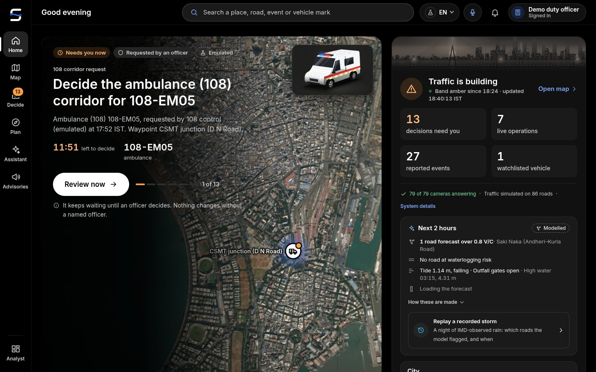
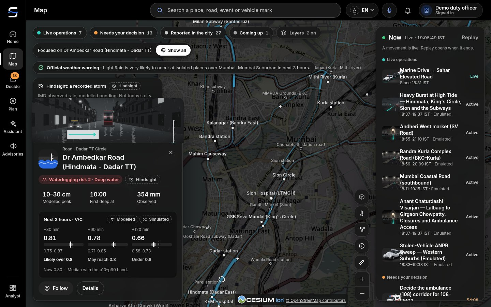
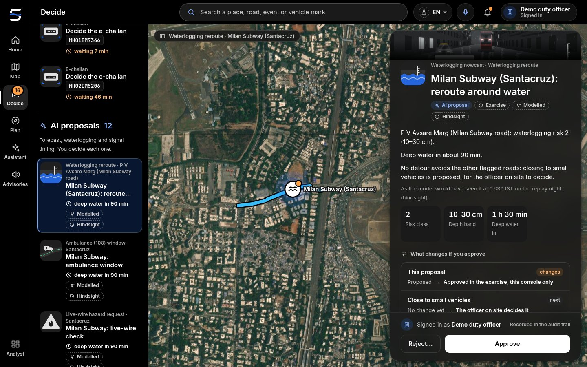
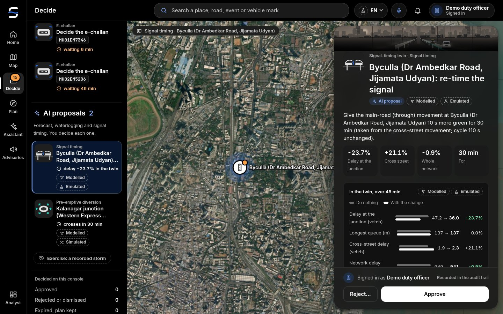
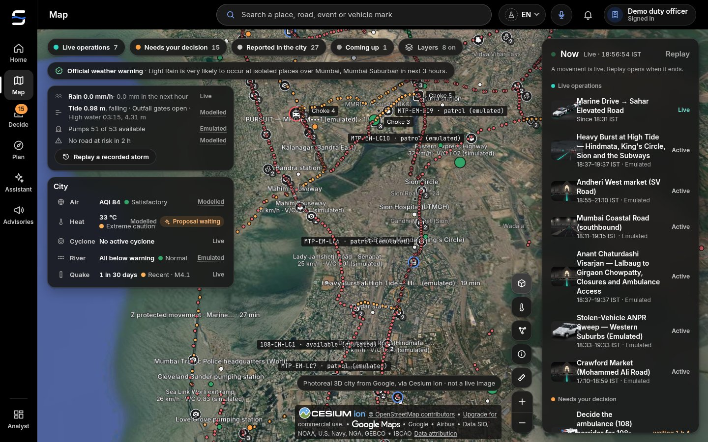
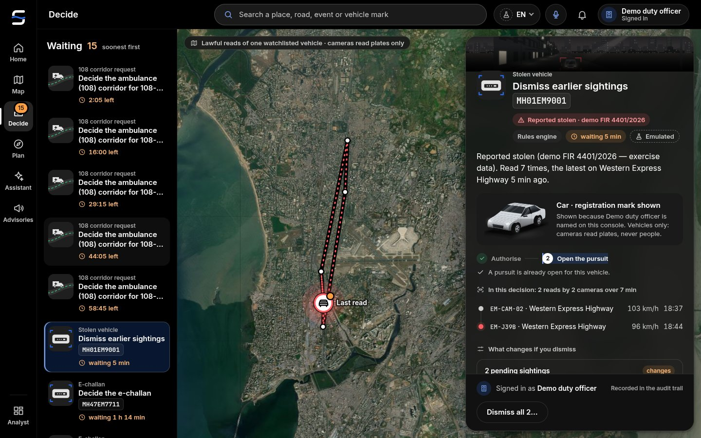
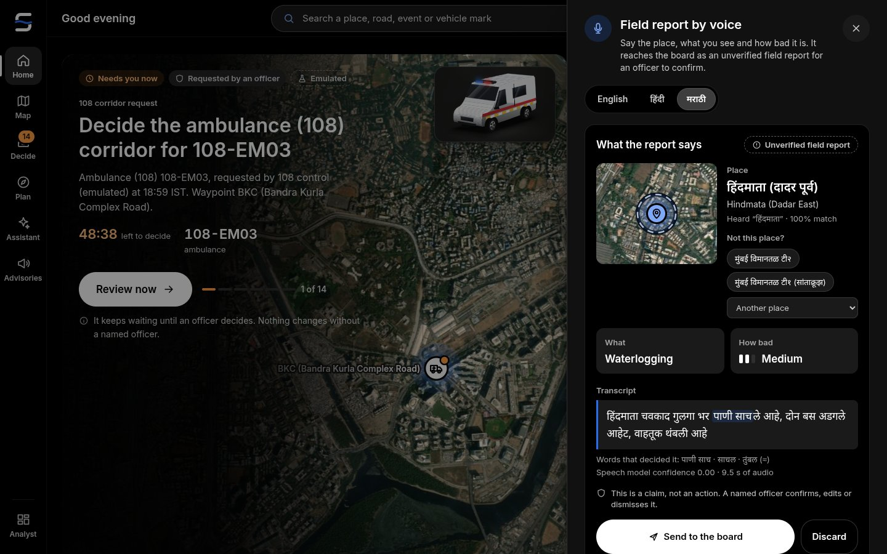
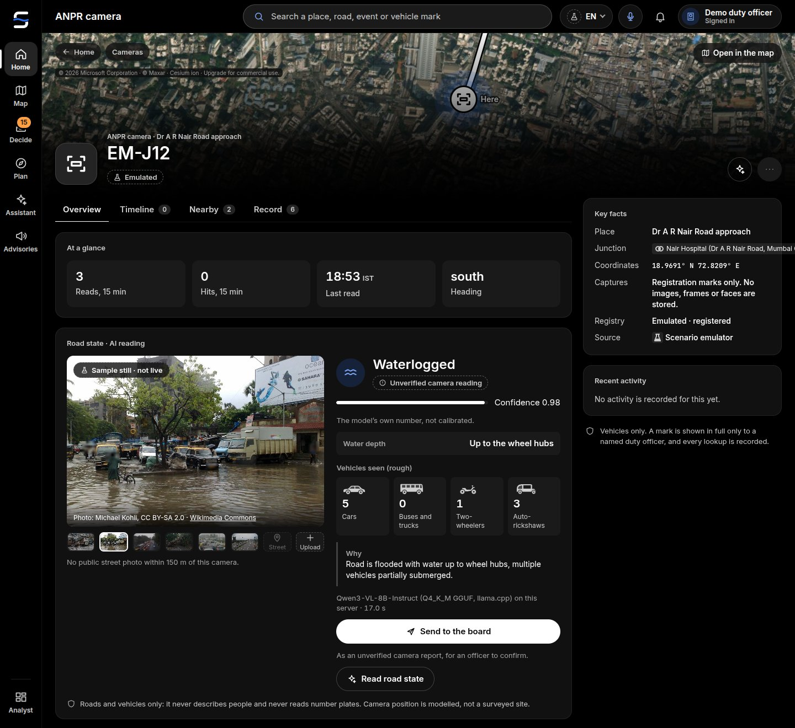
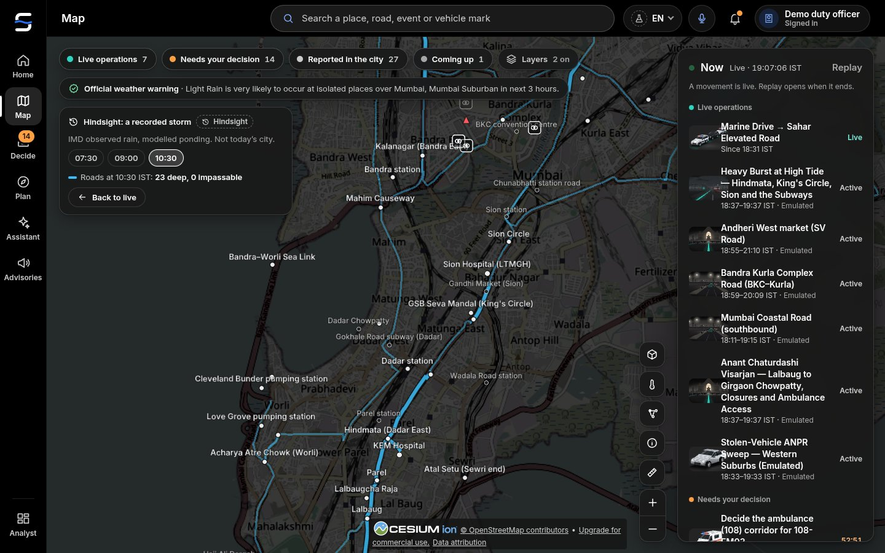
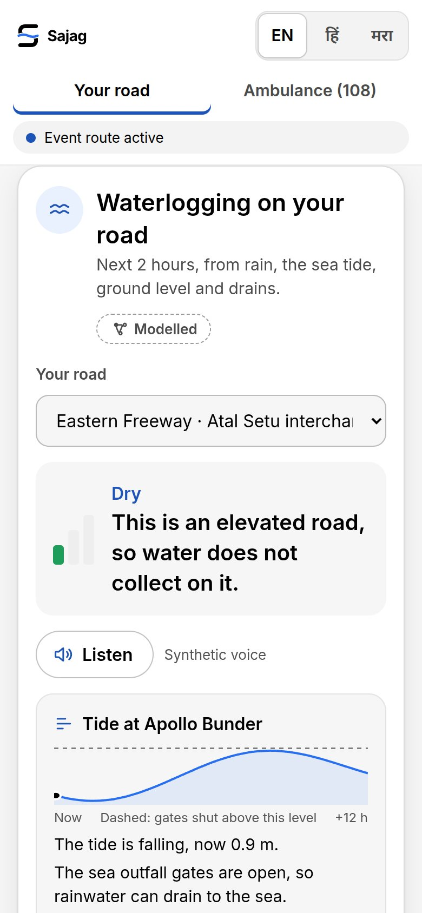
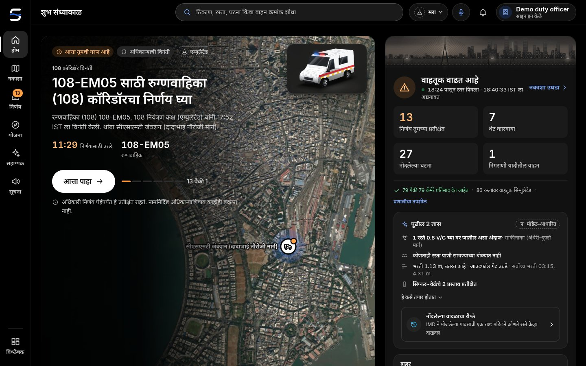
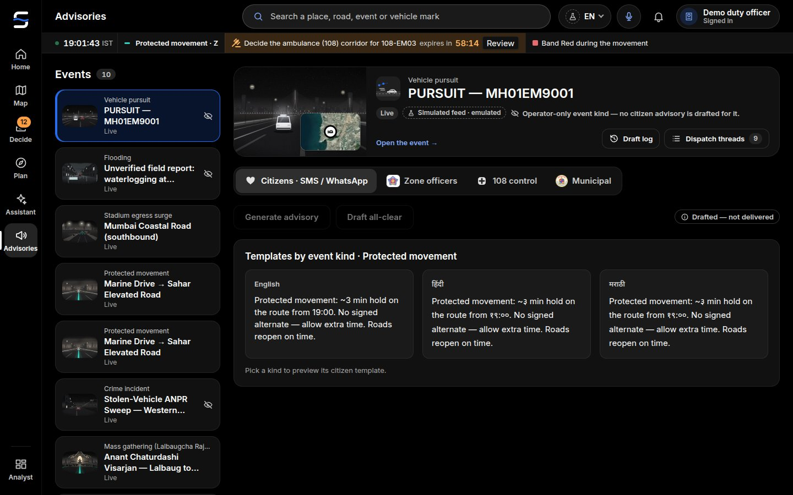
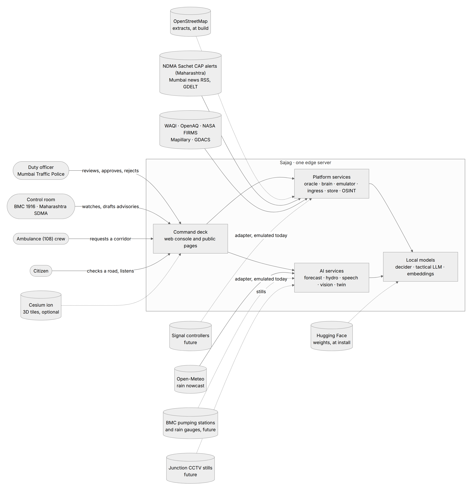
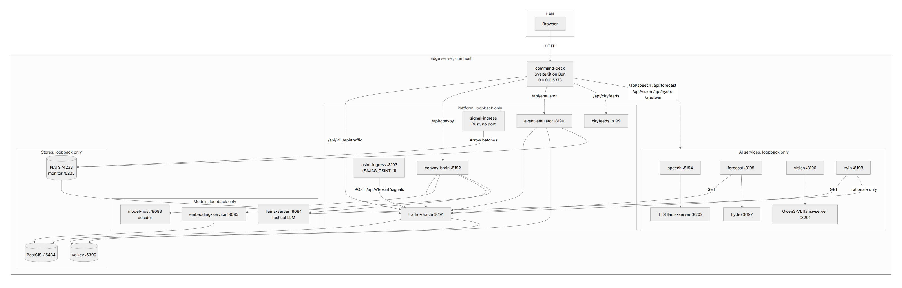
| Capability | Model (licence) | Result | Label |
|---|---|---|---|
| Corridor forecasting | Chronos-2 (Apache-2.0) | MAE 0.043 V/C vs 0.095 for the seasonal baseline (−55%); p10–p90 coverage 0.80 | SIMULATED history (Kolkata reference pack) until MTP detector data is connected |
| Waterlogging nowcast | rain × Apollo Bunder tide × DEM × BMC pumps | Replay of 18–19 August 2025: with the rain gauges' observed totals, the model flagged 9 of the 12 places reported flooded on its network (King's Circle, Andheri Subway, Gandhi Market, Byculla, Dadar TT, Vile Parle, Hindmata, Chembur, Kurla by the Mithi) and missed Sion, Khar and Goregaon. Its own flag came after the first news report at most places (median 51 minutes late: the bucket model fills slowly); with the observed rain as a perfect 2-hour nowcast (hindsight) it would have led the first report at 8 of the 9 (median 69 minutes). The Open-Meteo archive carried a third of the gauges' rain and flagged nothing, which is the case for a live rain-gauge feed. A second replay, 26 May 2025, flagged 5 of 15 reported places. | observed rain, MODELLED ponding and tide, EMULATED pumps |
| Signal-timing twin | cell-transmission model + Webster / max-pressure | Bottleneck discharge exact; shockwave speed within 0.2% of theory; every proposal tested against doing nothing | MODELLED |
| Voice (Marathi, Hindi, English) | AI4Bharat IndicConformer 600M multilingual (Marathi, Hindi), Whisper large-v3-turbo (English), AI4Bharat Indic Parler-TTS | Marathi WER 7.1 %, place right in 56 of 56; Hindi WER 14.0 %, 50 of 52 (IndicConformer, synthetic voices); English WER 10.2 % (Whisper turbo) | synthetic and recorded test phrases |
| Road state from a still | Qwen3-VL-8B (Apache-2.0) | 11 of 12 stills right (10 taken in Mumbai); 11 of 11 person, plate and road probes passed | Commons photos, credited; roads and vehicles only |
| Decision support | pplx-decider-v1.2 (Perplexity, Apache-2.0, 27B) | Answers in 1.0 s at p95; 22 of 26 labelled decisions on the Kolkata reference pack | proposals only; an officer decides |
| Memory and retrieval | pplx-embed-context-v1-4b + pplx-embed-v2-late-0.6b (MIT) | SOP recall@1 0.93 vs 0.71 for bge-m3; cross-script news dedup AUC 0.997 vs 0.56 (word overlap) | synthetic eval set on the Kolkata reference pack |
| Privacy (OSINT) | PII-Tracer (MIT) + rules | person recall 0.84 → 0.94; 0 of 122 place names redacted | synthetic eval set (Kolkata reference pack) |
Every model runs on the one on-premises computer; numbers come from the services' own evaluation files in the repository (docs/ai/*.md). Rows marked "Kolkata reference pack" were measured on the engine's first city and are engine facts, not Mumbai measurements.
| Measure | Value | Basis |
|---|---|---|
| Junction-freeze delay | 100× less (range 25×–506×) | rolling holds of a couple of minutes instead of a long freeze (central case); delay scales with the square of the hold |
| Protected movement, Mantralaya → Mumbai Airport T2 | 192,820 → 1,928 commuter-minutes | 10 junctions, 27.6 km on the Mumbai network |
| Ambulance (108) | ≈ 33,000 minutes a year returned | 12 crossing trips per movement-day (assumption) |
| Waterlogging warning | median 69 minutes ahead of the first report with a perfect 2-hour nowcast (hindsight); median 51 minutes late on the bucket model alone before deep water | replay of 18–19 August 2025 on observed rain |
Model outputs on Sajag's Mumbai OpenStreetMap network (72 junctions, 86 segments, 202 km) under stated assumptions (IMPACT_REPORT.md): not field measurements, and never a claim about lives saved.
| Suite | Result |
|---|---|
| Python services (all suites) | 6,443 passed |
| signal-ingress (Rust) | 121 passed |
| command-deck | 46 unit suites, contract replays, svelte-check 0 errors over 1,040 files, design-token and copy lints (4,939 English strings) |
| Total | 69 gates green |
| When | What |
|---|---|
| Month 0–1 | Read-only data MoU: Mumbai Traffic Police (CCTV stills, signal plans), the BMC (1916 disaster control, storm-water drains and pumps), Maharashtra SDMA (alerts), the ambulance (108) operator; nodal officers named. |
| Month 1–2 | Install the on-premises unit in the pilot control room; finish the Mumbai City Pack for the pilot zone; switch adapters from EMULATED to LIVE as access arrives. |
| Month 2–4 | Shadow mode before the monsoon: Sajag proposes, officers work as usual, weekly comparison. |
| Month 5–12 | Live pilot on one zone, e.g. Dr Ambedkar Road (Dadar TT – Hindmata – King's Circle – Sion) and the WEH at Andheri, through the monsoon and Ganeshotsav; officers approve every action. |
| Month 12 | Independent review; a city-wide plan across the 24 wards. |
| Cost item (planning estimates, not quotes) | Pilot (12 months) |
|---|---|
| On-premises AI units (2, one as backup) | ₹8–10 lakh |
| Engineering (3 × 6 months + 1 × 6 months) | ₹29 lakh |
| Water-level sensors at subways and low spots without BMC gauges (optional) | ₹4 lakh (Mumbai estimate) |
| Training and SOP workshops | ₹2 lakh |
| Backup connectivity | ₹0.5 lakh |
| Contingency (15%) | ≈ ₹6–7 lakh |
| Total pilot | ≈ ₹45–55 lakh |
| City-wide, two years (24 wards) | ≈ ₹2–2.5 crore; running ≈ ₹40–60 lakh a year (Mumbai estimates) |
| Software licences | ₹0: open models, OpenStreetMap, Sajag (MIT) |
Everything city-specific lives in a City Pack (cities/<id>/): the OpenStreetMap extract and corridors, gazetteer, agencies,
emergency numbers, plate format, languages, scenarios and impact parameters. The same engine runs the Mumbai pack and the Kolkata reference
pack. Next packs: Thane and Navi Mumbai (the same region, monsoon, tide and commuters), Pune (Mula–Mutha river floods and its own Ganeshotsav),
Nagpur and Nashik. Marathi and Hindi are already first-class. Per city: about 1–2 weeks of local data work, local adapters and SOPs.